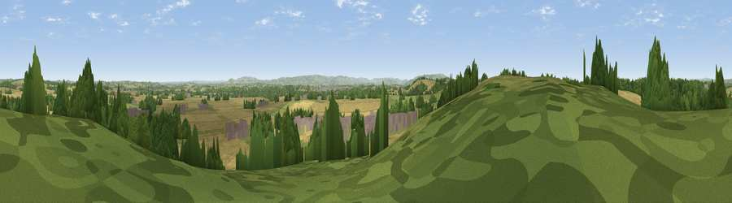

Viewpoint near Church Lench
#22963 in England · top 55% of its area beats it · near Church LenchThe view, rendered

A 360° render of this exact spot computed from the terrain model, tree cover and land cover — summer colours, afternoon light, calibrated against photographs of famous viewpoints. Real trees, hedges and buildings will differ in detail.
The panorama
Grey silhouette: terrain skyline in each direction (720 bearings, Earth curvature and refraction included). Dashed green: skyline with trees (+15 m) and buildings (+8 m) as obstacles. Blue strip: how far the ground is visible on each bearing.
Where the view opens
Wedge length = distance to the farthest visible ground on that bearing (vegetation-aware). Rings at 10, 25 and 50 km.
What fills the view
48% cropland · 27% grassland · 19% woodland · 6% built-up
Angular shares of the visible panorama (visual magnitude), not map area. Landscape diversity 0.52 (0–1 Shannon).
Key numbers
More beautiful places nearby
The staircase of upgrades: each row has a higher view potential than everything closer. Driving times are estimates from straight-line distance, calibrated against real road routing — check an actual route before setting out.
| Place | Direction | Drive | Score |
|---|---|---|---|
| Viewpoint near Church Lench | W · 2 km | ~5 min | 52.2 |
| Rous Lench Hill | NW · 3 km | ~8 min | 64.2 |
| Viewpoint near Lenchwick | SW · 4 km | ~10 min | 66.0 |
| Viewpoint near Elmley Castle | SW · 12 km | ~23 min | 76.9 |
| Viewpoint near Elmley Castle | SW · 13 km | ~25 min | 79.5 |
| Viewpoint near Elmley Castle | SSW · 14 km | ~25 min | 80.5 |
| Bredon Hill | SW · 14 km | ~25 min | 83.0 |
| North Hill | W · 28 km | ~44 min | 86.8 |
52.15928, -1.93819 · source: screening · position refined by local search. Computed location — check access rights before visiting.